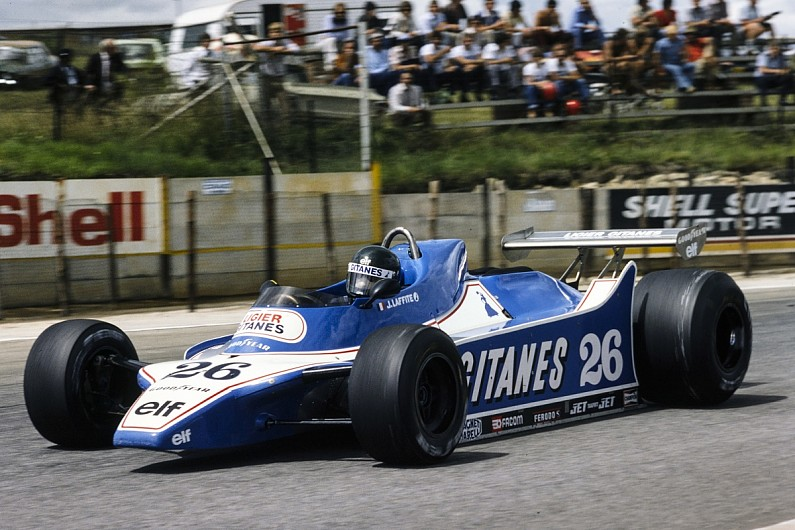

Ligier JS11/15
Years: 1979-1980
Design: Gerard Ducarouge
World championship F1 wins: 5 (including JS11)
Many Ligiers were distinctive and the Gitanes-liveried JS11/15 was probably the most iconic of all. And the fin to the rear of the large sidepods added to the French flair.
The JS11, the first Ligier to have a Cosworth DFV instead of a Matra V12 engine, made a sensational debut at the 1979 Argentinian Grand Prix. Jacques Laffite qualified on pole by over a second and then won the race, which he followed up by leading team-mate Patrick Depailler to a Ligier 1-2 in Brazil.
The car wasn't without its controversy and lost its edge, particularly when Williams perfected its FW07, but the improved 1980 version remained competitive.
Didier Pironi won the Belgian GP and probably could or should have won in Monaco, Britain and Canada as well, while Laffite scored a lucky victory in Germany.
Both versions looked cool, but we rather like the sleek JS11/15 without the front wing, a set-up often used in 1980.